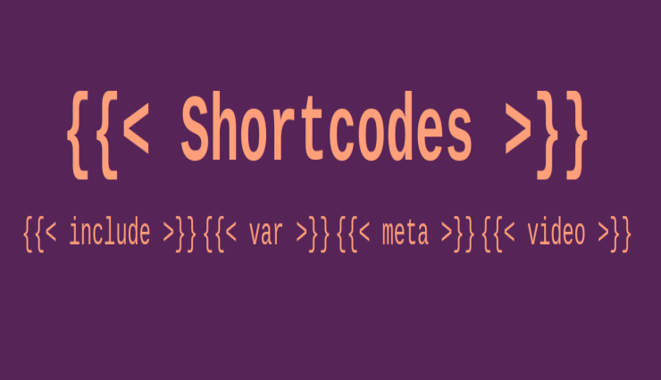
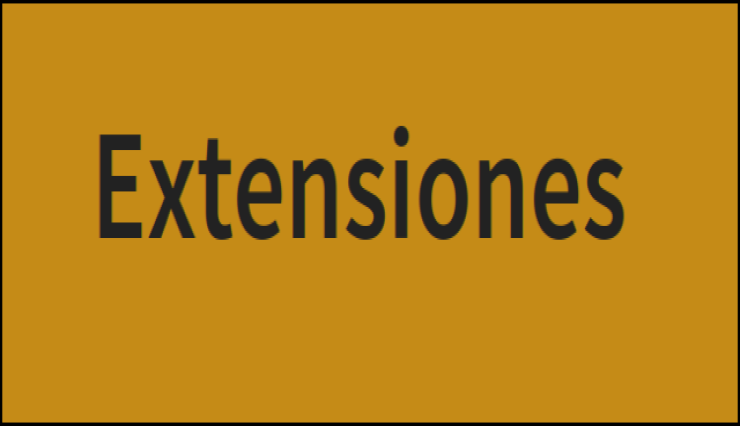
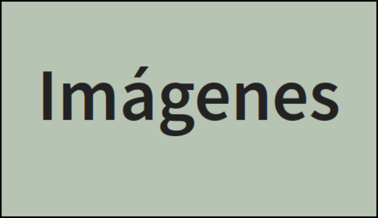
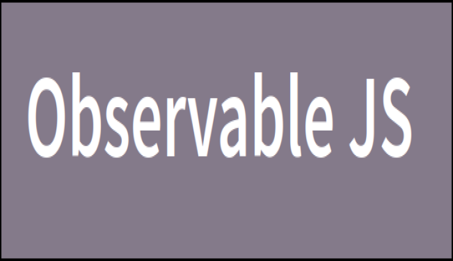
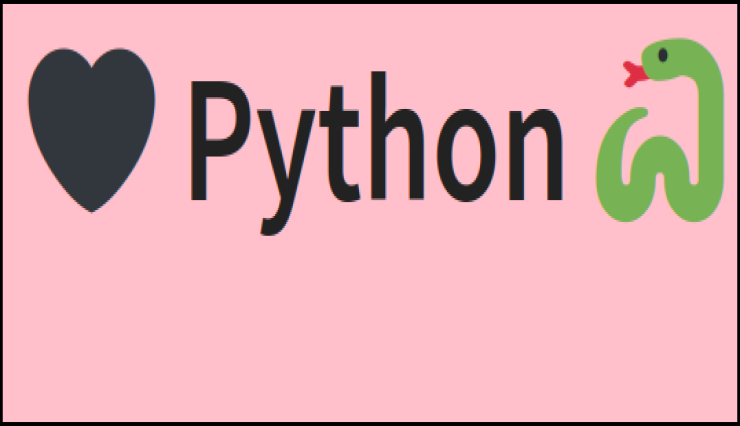

Este “blog” es un recurso más dentro del curso.
En el curso usaremos 3 programas: R, RStudio y Quarto, así que la primera tarea es saber qué son y para qué sirven: conviene saber diferenciar entre ellos.
Se presentan algunas ideas y referencias básicas sobre investigación reproducible.
Primeros pasos para crear slides chulas con Quarto.
¿Cómo incluir referencias bibliográficas en documentos .qmd? Una buena opción es a través de ficheros .bib creados en Zotero.
.qmd
.bib
Viendo las posibilidades de Layout que tenemos en Quarto

Cómo usar shortcodes en Quarto para, entre otras cosas, poder incluir el mismo contenido en varios documentos.

Intentando entender qué son y cómo usar las extensiones de Quarto

Repasando algunas opciones de Quarto para insertar imágenes.
Cambiando el formato con CSS
El contenido de este post es el mismo que el del anterior, PERO , pero ahora haciendo cambios bizarros!! con CSS.

Intentando entender qué es y cómo usar Observable JS en R.

Viendo cómo usar datos de R en chunks de Py con Quarto.
Viendo cómo modificar la apariencia de un post con opciones de YAML.
Post fake para hacer pruebas